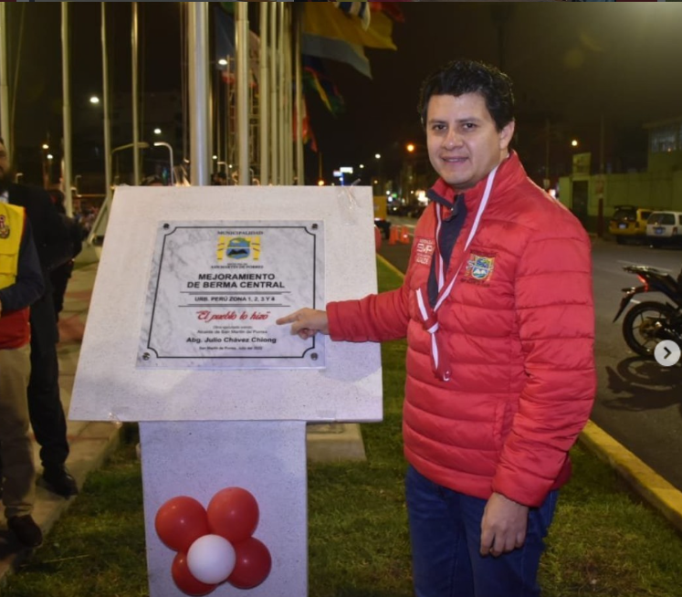
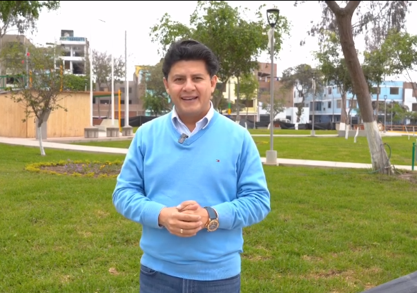
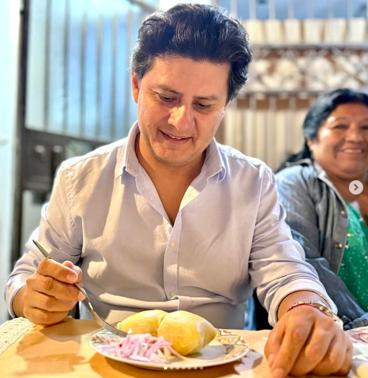
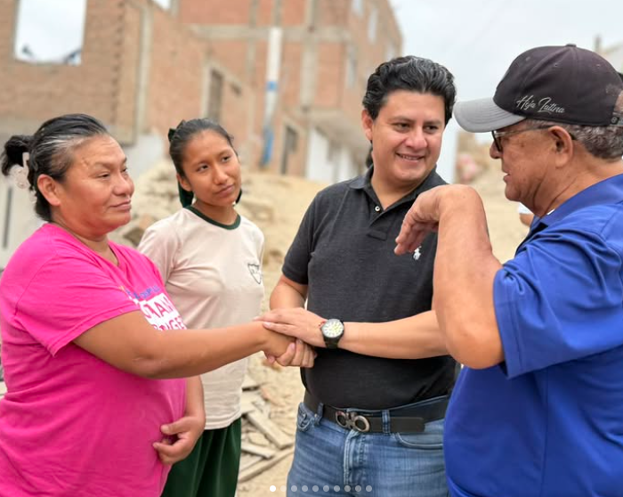

Obras y Desarrollo
Infraestructura vial, parques y espacios públicos que mejoren la calidad de vida de los vecinos de SMP.
Candidato a la Alcaldía de San Martín de Porres. Experiencia comprobada, trabajo honesto y un compromiso real con nuestra gente.
Nacido en Callao el 22 de julio de 1981, abogado y político con más de 20 años de militancia en Acción Popular. Ha desempeñado el honroso cargo de Secretario Nacional de Juventudes y ha sido alcalde del distrito de San Martín de Porres.
Como líder acciopopulista, busca fortalecer la unidad del partido, promover la disciplina partidaria y consolidar la institucionalidad — pilares fundamentales para el futuro de Acción Popular y su papel en la política nacional.
Más de dos décadas de compromiso con los valores del partido: trabajo, honestidad y servicio al pueblo peruano.
Lideró la organización juvenil del partido, formando a las nuevas generaciones de líderes acciopopulistas.
Gestionó la municipalidad con transparencia y cercanía al vecino, impulsando obras y programas sociales para el distrito.
Conduce la organización partidaria hacia la unidad, la disciplina y la institucionalidad que el país necesita.
Vuelve a postularse con la experiencia de haber gobernado y la convicción de seguir construyendo un SMP mejor para todos.
Una gestión transparente, cercana y orientada a resultados concretos para cada familia del distrito.
Infraestructura vial, parques y espacios públicos que mejoren la calidad de vida de los vecinos de SMP.
Apoyo a las familias más vulnerables con programas de salud, educación y empleo digno para todos.
Gestión municipal abierta, rendición de cuentas clara y participación ciudadana en cada decisión.
Coordinación con la Policía Nacional y programas de prevención para barrios más seguros.
Ferias laborales, capacitación técnica y apoyo a emprendedores locales del distrito.
Modernización de colegios, bibliotecas comunitarias y actividades culturales para la juventud.




¿Tienes propuestas, dudas o quieres ser voluntario? Déjanos tu mensaje de manera transparente.
Estamos abiertos a escuchar a cada vecino de San Martín de Porres. Tu participación es fundamental para construir juntos el distrito que merecemos.
Una campaña moderna es una campaña transparente. Sígueme en mis redes sociales:
Fotos del día a día, actividades vecinales, historias en tiempo real y el lado más cercano de nuestra campaña por SMP.
@juliochavezapFormatos dinámicos, respuestas directas a los vecinos, aclaración de propuestas y un diálogo abierto con la juventud.
@juliochavezapComunicados oficiales, transmisiones en vivo de los mítines, planes detallados de gobierno y debates distritales.
Julio Chávez APCon experiencia, transparencia y trabajo duro. Julio Chávez vuelve a postularse para seguir construyendo el distrito que merecemos.